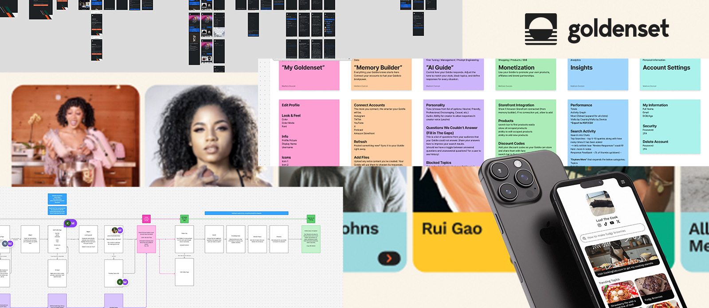
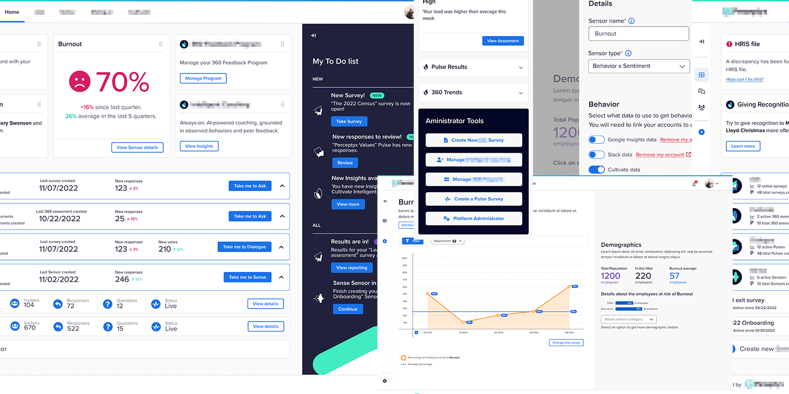
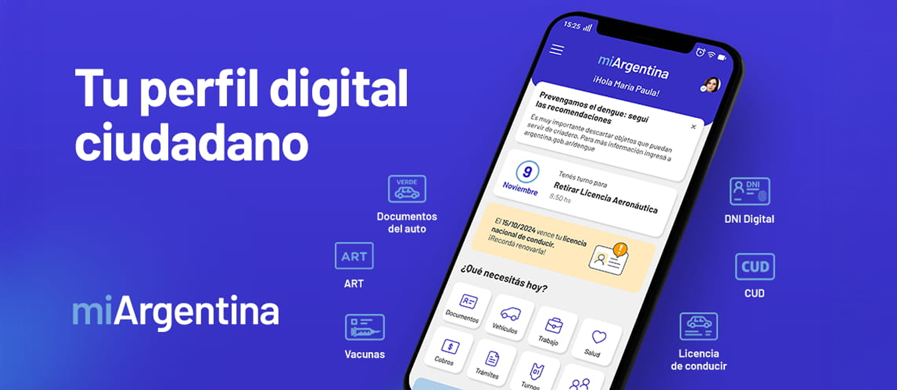

Processes that connect user needs with business goals through research, strategy, and iterative design—turning insights into user stories, flows, and validated solutions. By aligning product decisions with real user behavior and business objectives, I create experiences that are intuitive, scalable, and both meaningful for users and effective for the business.
This platform enables creators to power their AI assistant by connecting their social media accounts and managing the content the AI learns from. As the Lead Product Designer, I led the UX process end-to-end across both the user-facing product and the admin panel, starting with user interviews to understand creators’ needs, mental models, and concerns around AI. I translated those insights into user stories, mapped key flows, and iterated through wireframes and prototypes to validate decisions early. I worked closely with product and engineering to turn complex AI capabilities into clear, intuitive workflows, ensuring usability at every step. The result was an experience that empowers non-technical users to confidently manage their data, keep content up to date, and personalize their AI without relying on external support.
Lead UI/UX Designer
1 Designer, 1 Product Owner
Making the UI trustable and easy to use

◀ Click to see Case Study
I led the UX process for multiple platforms that enable organizations to create and manage “always-on” employee surveys without relying on analysts or support teams. At the time, there was no defined UX practice, so I introduced and established a structured UX process—from user research and stakeholder interviews to user stories, flows, and iterative validation, which was later adopted across the company. These platforms allow users to design surveys, continuously collect feedback, and combine sentiment data with behavioral data from other sources, while surfacing results through data visualization and analysis. My focus was on grounding product decisions in real user insights and turning complex data workflows into clear, actionable experiences that teams could easily understand and act on.
UI/UX Designer / FE Dev
1 Designers, 2 Developers
Multi-Role

◀ Click to see Case Study
I was part of the core team that ideated and shaped Mi Argentina. I played a key role across the full UX process; leading user interviews, synthesizing insights, defining user journeys and flows, and iterating through validation cycles, helping establish a user-centered approach within a complex public sector environment. My work focused on simplifying bureaucratic processes into clear, accessible experiences, ensuring the platform could serve a diverse population with varying levels of digital literacy while maintaining clarity, trust, and ease of use at scale.
UI/UX Product Designer
1 Designer, 2 Developers, 1 Data Admin
One app for an entire country

◀ Click to download App